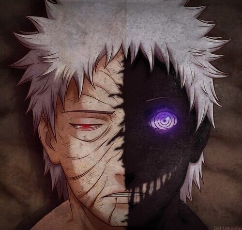
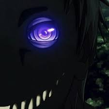

Black Zetsu (黒ゼツ, Kuro Zetsu) was the physical manifestation of Princess Kaguya Ōtsutsuki's will. It secretly instigated many of the events that shaped the shinobi world to secure Kaguya's revival.[4] To further its plans, it posed as Madara Uchiha's manifested will and then partnered with White Zetsu to become half of the Akatsuki member known simply as Zetsu (ゼツ, Zetsu).
Black Zetsu was created by Kaguya Otsutsuki shortly before she was sealed as the Ten-Tails by her twin sons, Hagoromo and Hamura.In the anime, Black Zetsu would approach Indra alone periodically, goading him with praises and curiosity towards Indra's true potential, even going so far as to say he could rival if not surpass the Sage of Six Paths himself.When Hagoromo later named his younger son, Asura, as the new leader of Ninshū, Black Zetsu tempted Hagoromo's elder son, Indra, to go in war with his younger brother. It decided that Indra's descendants, the Uchiha, would be the main cast of the shinobi history it was creating and also modified Hagoromo's tablet to claim that among other things; the Infinite Tsukuyomi would be the Uchiha's salvation. Over the centuries, it manipulated the two brothers' reincarnations in an attempt to get one to awaken the Rinnegan, and also recorded many events for Kaguya, including Madara Uchiha and Hashirama Senju's last fight at the Valley of the End. Sometime between Madara's death in his battle with Hashirama and the time delayed Izanagi Madara used to resurrect himself, Black Zetsu found out where Madara's body was hidden and hid itself inside Madara's body.
When Madara had seemingly created White Zetsu and its clone siblings, it was actually Black Zetsu pulling the transformed humans from Kaguya's Infinite Tsukuyomi out of the Demonic Statue of the Outer Path, merging them with the essence of the Hashirama plant clone Madara created to give them a diluted Wood Release.When Madara was on the verge of death, he believed he had created Black Zetsu by imbuing his will into half of White Zetsu, and that the complete Zetsu was partially his clone. In reality, it was Black Zetsu coming out of Madara's body after hiding inside of his body during his death. Zetsu later accompanied Obito Uchiha to Amegakure to locate Nagato, who had unknowingly been given Madara's Rinnegan as a child, and watched as Obito introduced himself as Madara Uchiha.
Compared to White Zetsu, Black Zetsu, nicknamed "Wicked Tongue" (毒舌, Dokuzetsu),is more serious and knowledgeable. In the Japanese version of the manga, Black Zetsu only uses katakana for okurigana and furigana. This is often conveyed in the anime through a deeper voice. After being reunited with Kaguya, it spoke with a softer, more human voice. While it and White Zetsu sometimes had differing opinions, the two halves were still able to function as a single entity.
Black Zetsu had the skill of appearing extremely trustworthy, obedient and loyal, being entrusted with Akatsuki's secrets and knowledge of Madara's Eye of the Moon Plan. In actuality, however, its true loyalties were kept secret from nearly everyone, including Madara himself. Unlike White Zetsu, who was kind to his allies, Black Zetsu expresses a belief that anyone beneath Madara is useless. When Obito lost the tailed beasts, Black Zetsu commented on how it was a more effective servant to Madara. It also had no qualms about using Obito's dying body as a host when it fought Kakashi Hatake and Minato Namikaze, showing how little it cared about the Uchiha's welfare, while deriding Obito for being useless for his treason. However, Black Zetsu's loyalties do not truly extend to Madara either, having feigned being created by the man in order to manipulate him discreetly which occurred for many years, and then harshly betrayed him and expressed to him how he was really no different from Obito. Black Zetsu even refers to Hagoromo's ideals of ninshū as absurd and his original text on the stone tablet as garbage.
Zetsu's main role within Akatsuki was to function as a spy, with other duties that were similar to those of a hunter-nin. It was able to control its body and take part in the tailed beast sealing ritual simultaneously, which, in addition to being unique to it, allowed it to act as a lookout while the sealing took place.When an agent of Akatsuki, or possibly even a member, died, Zetsu was sent to devour their bodies so as to not have their secrets revealed, further adding to its nature as a half-plant creature.Zetsu was also the one sent to retrieve the rings of dead Akatsuki members.Due to the role it played, Zetsu was the only member of Akatsuki to act without a partner on a regular basis. It operated on its own, often moving between the different locations where the other Akatsuki members were located. This resulted in other members reporting directly to it, rather than the figurehead leader, Pain. Zetsu would in turn report directly to Pain as well as Obito, the organisation's benefactor and eventual leader.
Black Zetsu is generally harsh and critical of nearly everyone it comes across, with the exception of its creator, Kaguya. Referring to itself as her son, it shows a deep reverence and devotion to her and is willing to go to any lengths to please her. It even goes as far as to encourage others to sympathise with her predicament following her sealing.Black Zetsu's determination to aid the one it calls mother runs so deep that it spent countless years influencing the shinobi world in order to facilitate her revival, even claiming that the history of shinobi exists only to bring her back. Believing itself to be the progenitor of the shinobi history, Black Zetsu thinks very highly of itself, and grew angry at Naruto for even daring to touch it, believing him to be unworthy to do so.Interestingly, when it first referred to itself as Kaguya's child, Black Zetsu's tone and demeanour was noted by Sasuke Uchiha to have changed.It appears in the end, Black Zetsu's true loyalties reach only to Kaguya Ōtsutsuki, a person it claims to be the will of, and whom it affectionately refers to as "mother" (母さん, kaa-san); Naruto even goes so far as to call Black Zetsu desperate to be at Kaguya's side, likening it to a snot-nosed brat who never wanted to leave its mother's side, and thus unable to realise that while it may have influenced shinobi history, said history was in fact built upon by the lives and deaths of many ninja.